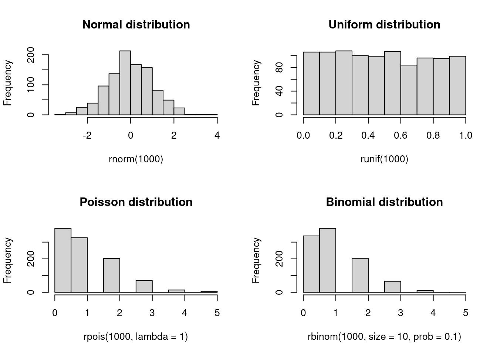
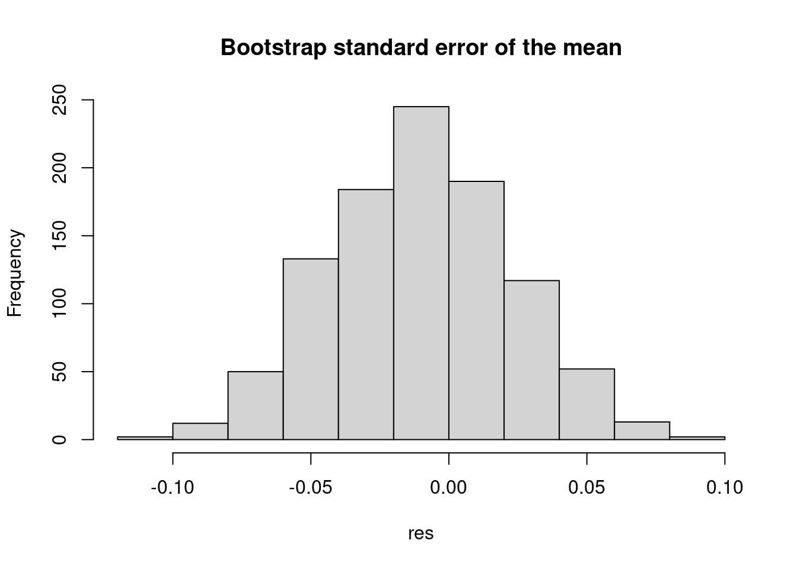

help("mean")2 Overview
Before jumping into network science details, we need to cover some fundamentals. I assume that most of the contents here are well known to you–we will be brief–but I want to ensure we are all on the same page.
2.1 Programming with R
The R programming language (R Core Team 2023) is the defacto language for social network analysis1. Furthermore, R homes the most comprehensive collection of packages implementing the methods we will cover here. Let’s start by the fundamentals
2.2 Getting help
Unlike other languages, R’s documentation is highly reliable. The Comprehensive R Archive Network [CRAN] is the official repository of R packages. All packages posted on CRAN must pass a series of tests to ensure the quality of the code, including the documentation.
To get help on a function, we can use the help() function. For example, if we wanted to get help on the mean() function, we would do:
2.3 Naming conventions
R has a set of naming conventions that we should follow to avoid confusion. The most important ones are:
- Use lowercase letters (optional)
- Use underscores to separate words (optional)
- Do not start with a number
- Do not use special characters
- Do not use reserved words
2.4 Assignment
In R, we have two (four) ways of assigning values to objects: the <- and = binary operators2. Although both are equivalent, the former is the preferred way of assigning values to objects since the latter can be confused with function arguments.
x <- 1
x = 12.5 Using functions and piping
In R, we use functions to perform operations on objects. Functions are implemented as function_name ( argument_1 , argument_2 , ... ). For example, the mean() function takes a vector of numbers and returns the mean of the values:
x <- c(1, 2, 3) # The c() function creates a vector
mean(x)
## [1] 2Furthermore, we can use the pipe operator (|>) to improve readability. The pipe operator takes the output of the left-hand side expression and passes it as the first argument of the right-hand side expression. Our previous example could be rewritten as:
c(1, 2, 3) |> mean()
## [1] 22.6 Data structures
Atomic types are the minimal building blocks of R. They are logical, integer, double, character, complex, raw:
x_logical <- TRUE
x_integer <- 1L
x_double <- 1.0
x_character <- "a"
x_complex <- 1i
x_raw <- charToRaw("a")Unlike other languages, we do not need to declare the data type before creating the object; R will infer it from the value.
The next type is the vector. A vector is a collection of elements of the same type. The most common way to create a vector is with the c() function:
x_integer <- c(1, 2, 3)
x_double <- c(1.0, 2.0, 3.0)
x_logical <- c(TRUE, FALSE, TRUE)
## etc.R will coerce the data types to the most general type. For example, if we mix integers and doubles, R will coerce the integers into doubles. The coercion order is logical < integer < double < character
The next data structure is the list. A list is a collection of elements of any type. We can create a list with the list() function:
x_list <- list(1, 2.0, TRUE, "a")
x_list_named <- list(a = 1, b = 2.0, c = TRUE, d = "a")To access elements in a list, we have two options: by position or by name, the latter only if the elements are named:
x_list[[1]]
## [1] 1
x_list_named[["a"]]
## [1] 1
x_list_named$a
## [1] 1After lists, we have matrices. A matrix is a collection of elements of the same type arranged in a two-dimensional grid. We can create a matrix with the matrix() function:
x_matrix <- matrix(1:9, nrow = 3, ncol = 3)
x_matrix
## [,1] [,2] [,3]
## [1,] 1 4 7
## [2,] 2 5 8
## [3,] 3 6 9
## We can access elements in a matrix by row column, or position:
x_matrix[1, 2]
## [1] 4
x_matrix[cbind(1, 2)]
## [1] 4
x_matrix[4]
## [1] 4The two last data structures are arrays and data frames. An array is a collection of elements of the same type arranged in a multi-dimensional grid. We can create an array with the array() function:
x_array <- array(1:27, dim = c(3, 3, 3))
## We can access elements in an array by row, column, and dimension, or
## position:
x_array[1, 2, 3]
## [1] 22
x_array[cbind(1, 2, 3)]
## [1] 22
x_array[22]
## [1] 22Data frames are the most common data structure in R. In principle, these objects are lists of vectors of the same length, each vector representing a column. Columns (lists) in data frames can be of different types, but elements in each column must be of the same type. We can create a data frame with the data.frame() function:
x_data_frame <- data.frame(
a = 1:3,
b = c("a", "b", "c"),
c = c(TRUE, FALSE, TRUE)
)
## We can access elements in a data frame by row, column, or position:
x_data_frame[1, 2]
## [1] "a"
x_data_frame[cbind(1, 2)]
## [1] "a"
x_data_frame$b[1] # Like a list
## [1] "a"
x_data_frame[[2]][1] # Like a list too
## [1] "a"2.7 Functions
Functions are the most important building blocks of R. A function is a set of instructions that takes one or more inputs and returns one or more outputs. We can create a function with the function() function:
## This function has two arguments (y is optional)
f <- function(x, y = 1) {
x + 1
}
f(1)
## [1] 2Starting with R 4, we can use the lambda syntax to create functions:
f <- \(x, y) x + 1
f(1)
## [1] 22.8 Control flow
Control flow statements allow us to control the execution of the code. The most common control flow statements are if, for, while, and repeat. We can create a control flow statement with the if(), for(), while(), and repeat() functions:
## if
if (TRUE) {
"a"
} else {
"b"
}
## [1] "a"
## for
for (i in 1:3) {
cat("This is the number ", i, "\n")
}
## This is the number 1
## This is the number 2
## This is the number 3
## while
i <- 1
while (i <= 3) {
cat("This is the number ", i, "\n")
i <- i + 1
}
## This is the number 1
## This is the number 2
## This is the number 3
## repeat
i <- 1
repeat {
cat("This is the number ", i, "\n")
i <- i + 1
if (i > 3) {
break
}
}
## This is the number 1
## This is the number 2
## This is the number 32.9 R packages
R is so powerful because of its extensions. R extensions (different from other programming languages) are called packages. Packages are collections of functions, data, and documentation that provide additional functionality to R. Although anyone can create and distribute R packages to other users, the Comprehensive R Archive Network [CRAN] is the official repository of R packages. All packages posted on CRAN are thoroughly tested, so generally, their quality is high.
To install R packages, we use the install.packages() function; to load them, we use the library() function. For example, the following code chunk installs the ergm package and loads it:
install.packages("ergm")
library(ergm)2.10 Statistics
Generally, statistics are used for two purposes: to describe and to infer. We observe data samples in descriptive statistics, recording and reporting the mean, median, and standard deviation, among other statistics. Statistical inference, on the other hand, is used to infer the properties of a population from a sample, particularly, about population parameters.

From the perspective of network science, descriptive statistics are used to describe the properties of a network, such as the number of nodes and edges, the degree distribution, the clustering coefficient, etc. Statistical inference in network science has to do with addressing questions about the underlying properties of networked systems; some questions include the following:
- Are two networks different?
- Is the number of observed triangles in a network higher than expected by chance?
- Are individuals in a network more likely to be connected to individuals with similar characteristics?
- etc.
Part of statistical inference is hypothesis testing.
2.11 Hypothesis testing
According to Wikipedia
A statistical hypothesis test is a method of statistical inference used to decide whether the data at hand sufficiently support a particular hypothesis. More generally, hypothesis testing allows us to make probabilistic statements about population parameters. More informally, hypothesis testing is the processes of making decisions under uncertainty. Typically, hypothesis testing procedures involve a user selected tradeoff between false positives and false negatives. – Wiki
In a nutshell, hypothesis testing is performed by following these steps:
State the null and alternative hypotheses. In general, the null hypothesis is a statement about the population parameter that challenges our research question; for example, given the question of whether two networks are different, the null hypothesis would be that the two networks are the same.
Compute the corresponding test statistic. It is a data function that reduces the information to a single number.
Compare the observed test statistic with the distribution of the test statistic under the null hypothesis. The sometimes infamous p-value: ``[…] the probability that the chosen test statistic would have been at least as large as its observed value if every model assumption were correct, including the test hypothesis.’’ (Greenland et al. 2016) 3
- Report the observed effect and p-value, i.e., \Pr(t \in H_0)
We usually say that we either reject the null hypothesis or fail to reject it (we never accept the null hypothesis,) but, in my view, it is always better to talk about it in terms of “suggests evidence for” or “suggests evidence against.”
We will illustrate statistical concepts more concretely in the next section.
2.12 Statistical programming
Statistical programming (or computing) is the science of leveraging modern computing power to solve statistical problems. The R programming language is the defacto language for statistical programming, and so it has an extensive collection of packages implementing statistical methods and functions.
2.13 Probability distributions
R has a standard way of naming probability functions. The naming structure is [type of function][distribution], where [type of function] can be d for density, p for cumulative distribution function, q for quantile function, and r for random generation. For example, the normal distribution has the following functions:
dnorm(0, mean = 0, sd = 1)
## [1] 0.3989423
pnorm(0, mean = 0, sd = 1)
## [1] 0.5
qnorm(0.5, mean = 0, sd = 1)
## [1] 0Now, if we wanted to know what is the probability of observing a value smaller than -2 comming from a standard normal distribution, we would do:
pnorm(-2, mean = 0, sd = 1)
## [1] 0.02275013Currently, R has a wide range of probability distributions implemented.
2.14 Random number generation
Random numbers, and more precisely, pseudo-random numbers, are a vital component of statistical programming. Pure randomness is hard to come by, and so we rely on pseudo-random number generators (PRNGs) to generate random numbers. These generators are deterministic algorithms that produce sequences of numbers we can then use to generate random samples from probability distributions. Because of the latter, PRNGs need a starting point called the seed. As a statistical computing program, R has a variety of PRNGs. As suggested in the previous subsection, we can generate random numbers from a probability distribution with the r function. In what follows, we will draw random numbers from a few distributions and plot histograms of the results:
set.seed(1)
## Saving the current graphical parameters
op <- par(mfrow = c(2,2))
rnorm(1000) |> hist(main = "Normal distribution")
runif(1000) |> hist(main = "Uniform distribution")
rpois(1000, lambda = 1) |> hist(main = "Poisson distribution")
rbinom(1000, size = 10, prob = 0.1) |> hist(main = "Binomial distribution")
par(op)2.15 Simulations and sampling
Simulations are front and center in statistical programming. We can use them to test the properties of statistical methods, generate data, and perform statistical inference. The following example uses the sample function in R to compute the bootstrap standard error of the mean (see Casella and Berger 2021):
set.seed(1)
x <- rnorm(1000)
## Bootstrap standard error of the mean
n <- length(x)
B <- 1000
## We will store the results in a vector
res <- numeric(B)
for (i in 1:B) {
# Sample with replacement
res[i] <- sample(x, size = n, replace = TRUE) |>
mean()
}
## Plot the results
hist(res, main = "Bootstrap standard error of the mean")
Since the previous example is rather extensive, let us review it in detail.
set.seed(1)sets the seed of the PRNG to 1. It ensures we get the same results every time we run the code.rnorm()generates a sample of 1,000 standard-normal values.n <- length(x)stores the length of the vector in thenvariable.B <- 1000stores the number of bootstrap samples in theBvariable.res <- numeric(B)creates a vector of lengthBto store the results.for (i in 1:B)is a for loop that iterates from 1 toB.res[i] <- sample(x, size = n, replace = TRUE) |> mean()samplesnvalues fromxwith replacement and computes the mean of the sample.The pipe operator (
|>) passes the output of the left-hand side expression as the first argument of the right-hand side expression.hist(res, main = "Bootstrap standard error of the mean")plots the histogram of the results.
Although, not for network science in general.↩︎
In mathematics and computer science, a binary operator is a function that takes two arguments. In R, binary operators are implemented as
variable 1[operator]variable 2. For example,1 + 2is a binary operation.↩︎The discussion about interpreting p-values and hypothesis testing is vast and relevant. Although we will not review this here, I recommend looking into the work of Andrew Gelman Gelman (2018).↩︎